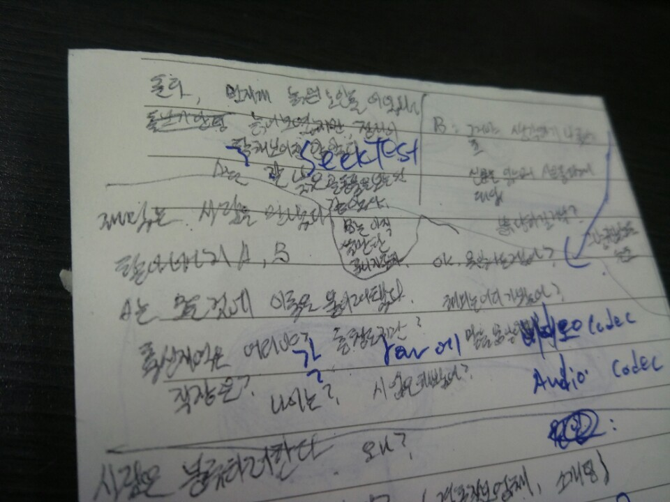

분류하는 노인
 몰래 두 노인의 대화를 적었다
오늘 출근길 7호선에서 분류하기 좋아하는 노인을 봤다. 노인은 멋지게 늙은 대기업 중역의 모습을 하고 있었는데, 가죽 화가모자에 양복바지를 빼입고, 잘 닦인 고급 구두를 신고있었다. 그는 노약자석에 남은 마지막 한 자리에 몸을 편안히 뉘이고, 이내 조용히 신문을 읽고있던 옆자리 노인을 거침없이 분류하기 시작했다.
그는 처음보는 사람에게도 거리낌 없었다. 노인은 우선 "그쪽은 나이가 몇 살이야? 63살? 나보다 어리네" 라는 짧고 간단한 말로 신문읽던 노인을 아직 세상물정 잘 모르는 어린 인간으로 과감하게 분류했다. 신문읽던 노인은 이어지는 "어디 출신이야? 충청도?" 라는 말에 느릿느릿한 충청도 사람으로 한 번 분류되고, "해외는 어디 나가봤어? 나는 미국이랑 불란서 좀 가봤거든"라는 말에 바다 밖으로 나가본 적 없는 촌놈으로 한 번 더 무참히 분류당했다. 그때 즈음 이미 신문읽던 노인의 표정은 좋지않아 보였다.
신문읽던 노인이 가만히 당하고만 있었던 것은 아니다. 분류하는 노인의 "젊었을 적엔 좋은 회사 다녔어? 나는 조흥은행 다녔어, KT랑"라는 말에 "좋은 회사는 사람마다 생각하기 나름인거 아니유?"라고 대답하며 소심하게 저항해보기도 하는 것이었다. 그러나 그것은 이미 분류하는 노인보다 좋지 못한 회사를 다닌 인간으로 분류당한 뒤였다. 그런 말은 좋지못한 회사를 다니는 사람들이나 하는 변명이라는 것이다. 그렇게 신문읽던 노인은 분류하는 노인 옆자리에 앉은채 일방적으로 분류당했다. 나보다 어린, 충청도 출신의, 해외에 나가본 적 없는, 별 볼일 없는 회사를 다닌, 봉급쟁이 생활만 해본, 돈이 별로 없는, 그런 노인. 숭실대입구역에 도착했을 때 즈음엔 그는 이미 12가지 정도의 특징을 가진 인간으로 규정되어 있었다.
난데없이 몇 번의 분류를 당한 노인은 꽤 불편해보였다. 신문읽던 노인은 불쾌한 기색을 드러내며 이어지는 질문에 대답하지 않았다. 분류하는 노인은 무안하다는 듯 머리를 긁적였고, 두 노인 사이에 약간의 정적이 흘렀다. 어느새 나도 손에 땀을 쥐며 지켜보고 있었다. 과연 분류하는 노인은 이대로 분류하기를 포기하고 마는 것일까? 그러나 그렇게 몇 초가 흘렀을 때—그는 이내 잽싸게 신문을 어깨너머로 훔쳐보고서는, "오늘의 영어회화? 영어공부하는구만. 유 스픽 잉글리시? 내가 영어 좀 하거든" 라고 너스레를 떨며 신문읽는 노인을 자기보다 영어 못하는 사람으로 규정하는 데 성공해내고 마는 것이었다. 그는 다음역인 보라매역에서 내려 유유히 사라졌고, 빈 자리에 남은건 신문읽던 노인의 붉어진 얼굴이었다.
— 두 노인의 짧은 촌극이 인상깊었던 이유는, 우리가 살아가는 모습을 둘에게서 옅볼 수 있었기 때문일지도 모른다. 우리는 때론 분류하는 노인이 되기도 하고, 이에 소심하게 저항하는 신문읽던 노인으로 살아가기도 한다. 소개팅을 할 때 학교, 성격, 키 또는 얼굴로 사람을 분류해서 주선해달라고 부탁하는가 하면, 대기업에서 출신학교, 학점, 스펙으로 사람을 평가하는 일에 분노하기도 한다. 출근길에 우연찮게 주은 재밌는 일화에 불과하지만, 참 많은 생각을 하게 만든다. 사람을 분류해서는 안되는 걸까? 만약 그렇다면 세상 모든 사람들을 정성들여 소상히 평가해야만 하는 걸까? 그게 현실적으로 가능할까? 생각이 복잡해진다.